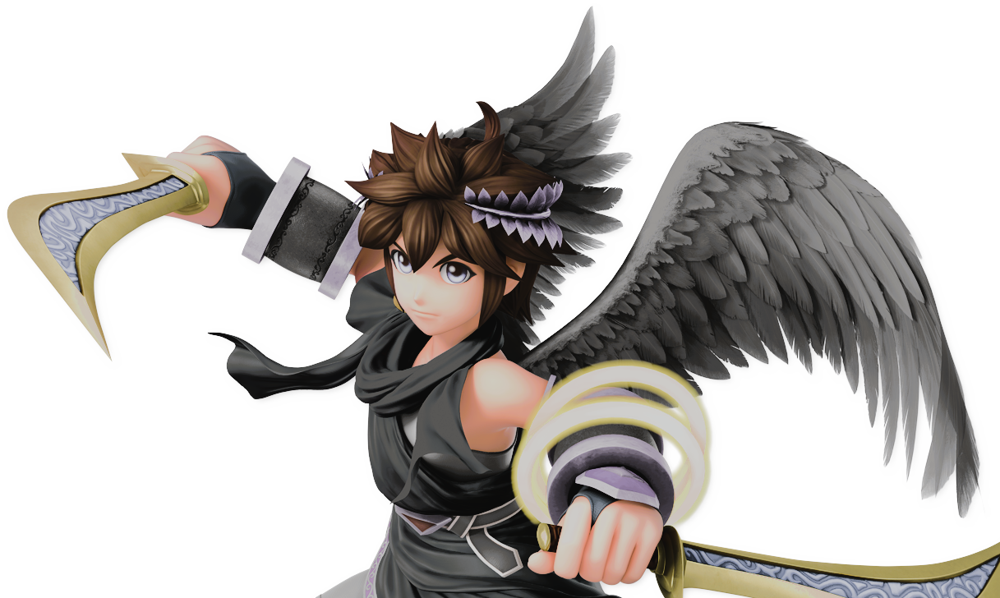

...
...
...
Someone is floating in the vast void of nothing.
Their eyes are wide open, and yet...
All they see is darkness.
They know they are physically there. They can feel their own prescence. They can hear these thoughts.
And yet, they cannot react. Cannot move. Cannot be.
...
...
...
And then, for what feels like millennia...
They close their eyes...
...
...
And suddenly... Daylight.
They can see.
They can see their own body.
They can see the world around them.
They can see this grand stadium stand before them.
They can see. Hear. Smell. Sense.
They are.
They look up at the stadium with intent, as a small grayish wisp of something floats around and beside them.
“So... It’s begun again.”
??? (Pit, Skin 6), It/Its, ???
“???”
Status: ???
Its fists tighten as it takes a moment to breathe.
“...Let’s see what we can find here.”